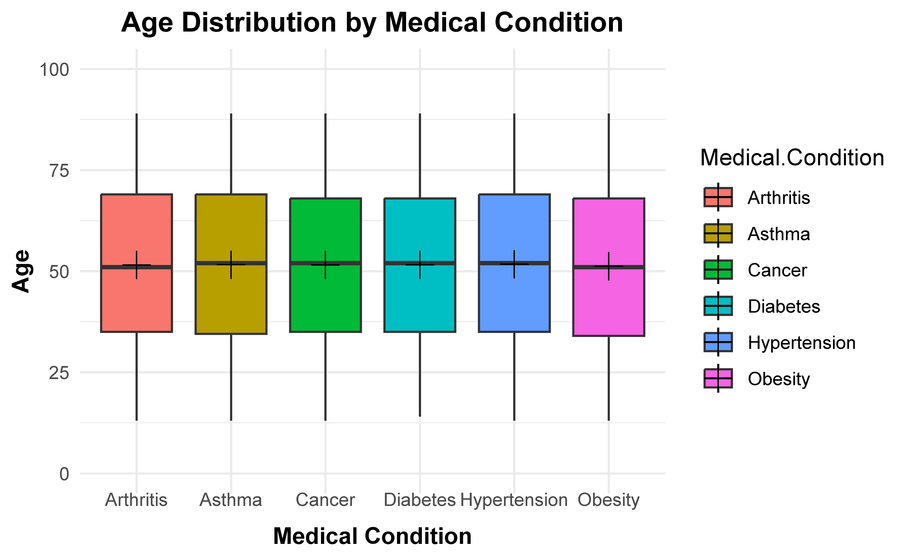
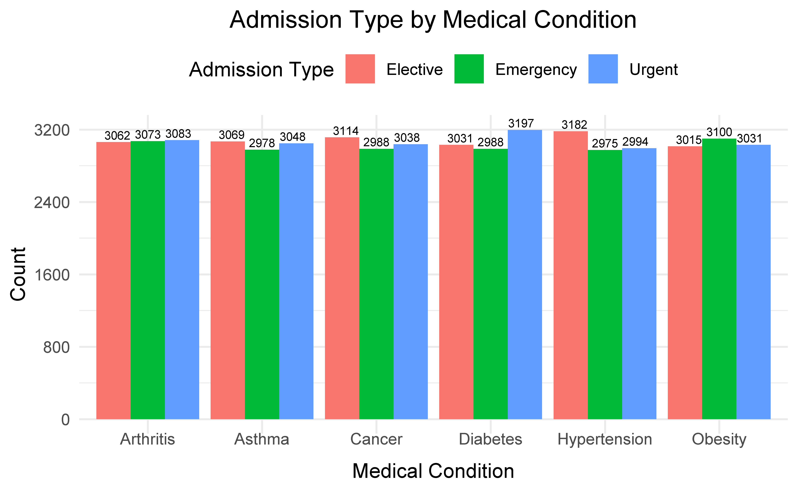
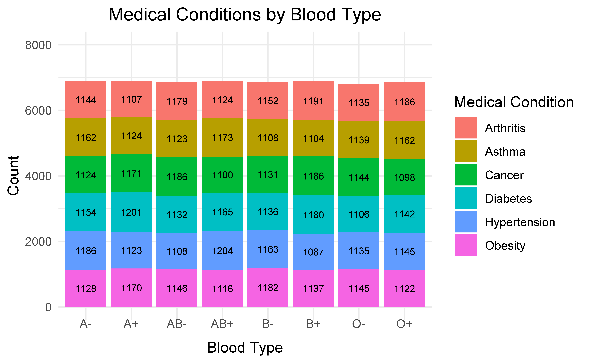
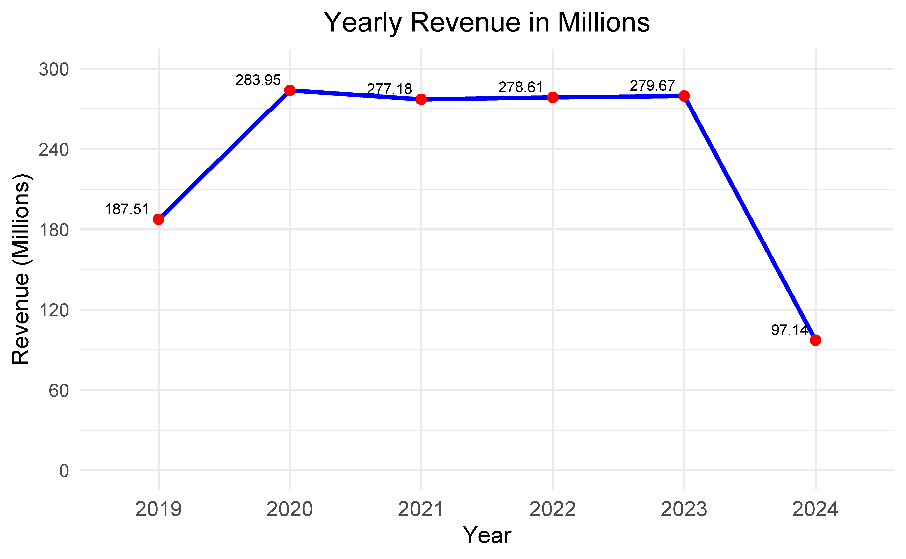
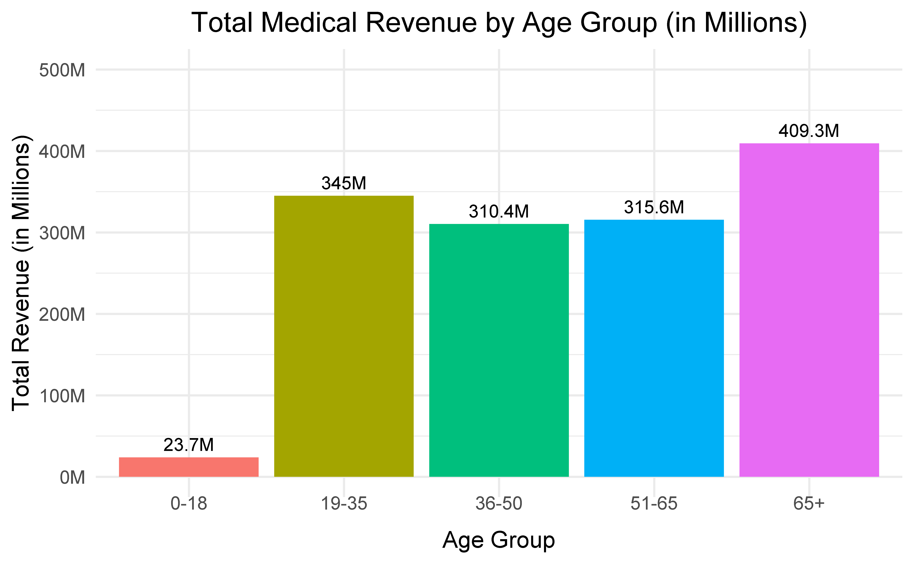
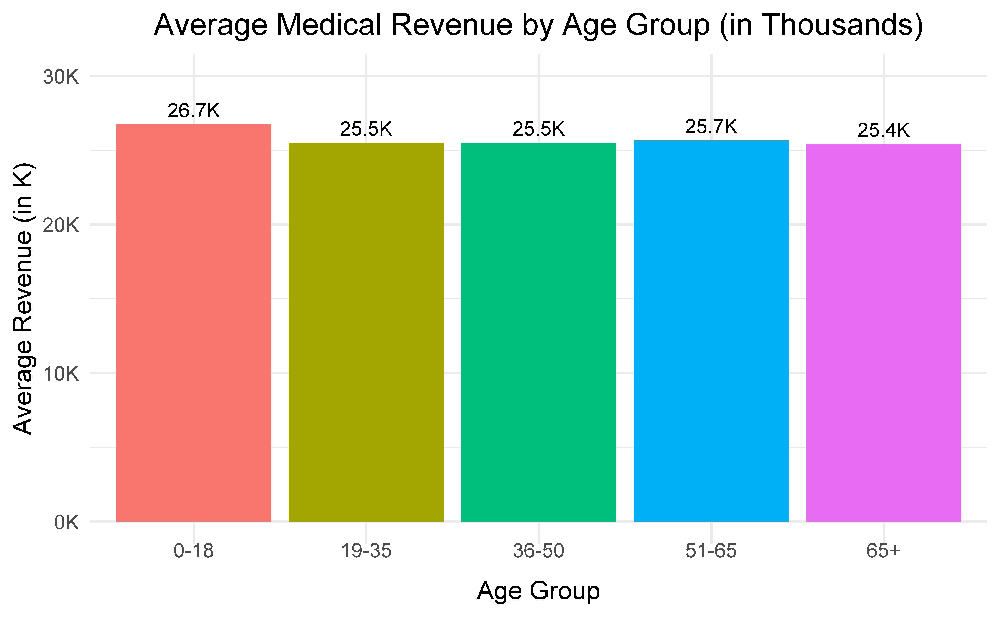
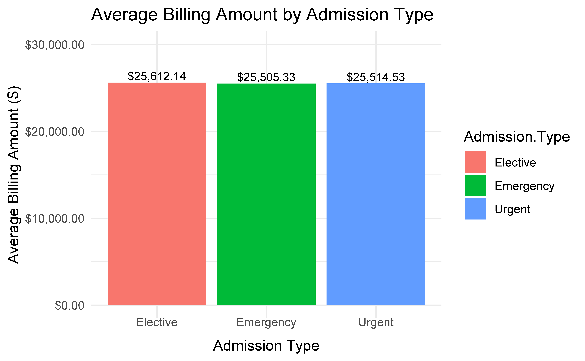
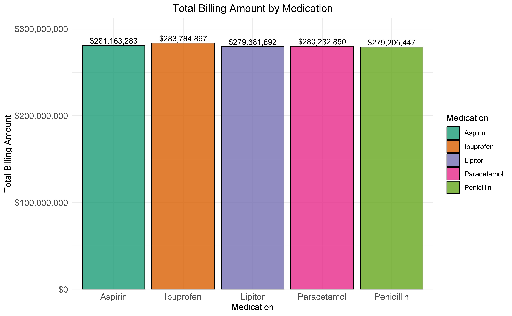
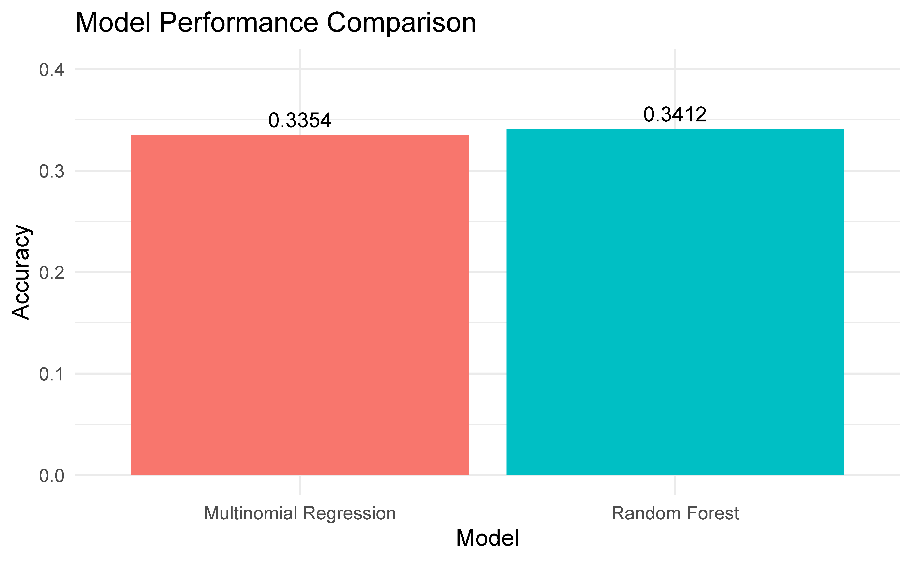

Age Group Distribution of Patients
### Age Group Distribution
Age Group Distribution of Patients
| 0-18 |
886 |
| 19-35 |
13519 |
| 36-50 |
12167 |
| 51-65 |
12298 |
| 65+ |
16096 |
Interpretation of the Results
The table provides a summary of the distribution of patients across different age groups. The age groups are defined as: 0-18 years: Representing children and adolescents. 19-35 years: Representing young adults. 36-50 years: Representing middle-aged individuals. 51-65 years: Representing older adults nearing retirement age. 65+ years: Representing the elderly population. The counts in the table allow us to analyze which age group has the highest or lowest number of patients, helping identify trends in patient demographics. This can assist healthcare providers in tailoring age-specific services or interventions.
Age Distribution by Medical Condition

Interpretation of the Graph
The boxplot represents the distribution of patients’ ages across various medical conditions. Key insights include:
Boxplot Details:
The box shows the interquartile range (IQR), representing the middle 50% of ages for each medical condition. The horizontal line inside the box represents the median age for each condition. Whiskers extend to the smallest and largest values within 1.5 times the IQR, and points outside these whiskers are considered outliers. Jittered Points:
The scatter points (jitter) overlay the boxplot to show individual patient ages, providing more granular data visibility. Mean Indication:
A black ‘X’ marker (mean point) is added for each medical condition, offering a quick comparison of average age. General Trends:
Variations in age distribution across medical conditions can indicate if specific conditions are more common among certain age groups. For example, conditions like arthritis or hypertension may have higher age medians compared to asthma or diabetes, which could indicate age-related trends.
Admission Type by Medical Condition

Interpretation of the Graph
This grouped bar chart visualizes the relationship between medical conditions and admission types, providing the following insights:
Admission Type Breakdown: For each medical condition, bars represent counts of different admission types (e.g., Emergency, Elective, or Urgent). The dodge position ensures clear separation between bars for easier comparison across admission types.
Key Observations: Certain conditions like Hypertension or Diabetes may have higher counts for specific admission types, such as Emergency. Elective admissions may dominate planned medical conditions such as Obesity-related procedures. Urgent admissions might be fewer overall, reflecting their specialized and immediate nature.
Practical Implications: Hospitals can use this data to allocate resources appropriately based on admission patterns for different conditions. Identifying conditions with higher emergency admissions can guide emergency preparedness.
Medical Conditions by Blood Type

Interpretation of the Graph
This stacked bar chart illustrates the distribution of medical conditions across different blood types, providing the following insights:
Blood Type Analysis: The bars represent the total count of individuals for each blood type, with subdivisions indicating various medical conditions. The stacking highlights how medical conditions are distributed within each blood type.
Medical Condition Contribution: Certain blood types (e.g., O+, A+) may show higher overall counts, reflecting their prevalence in the dataset. Specific medical conditions may dominate for certain blood types, indicating potential associations between medical conditions and blood types.
Key Observations: Blood types such as O- or AB- might have lower overall counts, which aligns with their rarity in the general population. The composition of medical conditions within each blood type is relatively consistent, with a few exceptions.
Practical Implications: This chart is useful for identifying whether certain blood types are more prone to specific medical conditions. Healthcare providers can use this data for personalized care, especially in conditions where blood type may have clinical relevance.
Yearly Revenue Summary and Validation
# A tibble: 6 × 3
Year total_revenue total_revenue_millions
<chr> <dbl> <dbl>
1 2019 187511031. 188.
2 2020 283952664. 284.
3 2021 277178299. 277.
4 2022 278612040. 279.
5 2023 279670833. 280.
6 2024 97143472. 97.1
# A tibble: 6 × 3
Year total_revenue manual_check_millions
<chr> <dbl> <dbl>
1 2019 187511031. 188.
2 2020 283952664. 284.
3 2021 277178299. 277.
4 2022 278612040. 279.
5 2023 279670833. 280.
6 2024 97143472. 97.1
Interpretation of the Code
This code calculates and validates the total yearly revenue from healthcare services based on patient admissions. The following insights are derived:
Date Handling: The Date.of.Admission column is converted to the Date format to enable accurate date-based analysis. The Year is extracted from the admission dates to facilitate grouping and summarizing data by year.
Revenue Calculation: The total revenue (Billing.Amount) is calculated for each year. Revenue values are converted to millions for easier interpretation and reporting.
Validation: A manual check is included to validate the conversion of revenue to millions, ensuring accurate computations.
Practical Utility: This information can help identify trends in revenue over the years, which may reflect changes in patient volume, service costs, or healthcare policies.
Yearly Revenue Trend Analysis

Interpretation of the Graph
The Yearly Revenue Trend line graph displays the total revenue (in millions) generated by healthcare services across different years. Here’s what can be inferred: The blue line indicates the trend in total revenue over time, showing increases or decreases in revenue each year. Red points mark the revenue for each year, highlighting individual data points for clarity. Text labels above each red point provide the exact value of the revenue (in millions) for each corresponding year. The y-axis represents the revenue in millions, and the x-axis corresponds to the years. The overall trend in the graph could reveal periods of revenue growth, decline, or consistency, which may be linked to healthcare events, policy changes, or economic factors.
This graph can be used to assess financial performance over time, identify any significant changes, and inform decision-making for future strategies.
Research Questions:
RQ-1. How does total and average medical revenue vary across different age groups, and what is the proportional contribution of each age group to the overall medical revenue?
The analysis shows that older age groups, particularly those aged 65 and above, contribute the most to total medical revenue, generating $409.3M, or 29.2% of the overall revenue. This is followed by the 19–35, 51–65, and 36–50 age groups, which also make significant contributions. In contrast, the 0–18 age group accounts for only $23.7M, making up just 1.7% of the total revenue.
Interestingly, the average medical revenue per person is fairly consistent across all age groups, ranging from $25.4K to $26.7K, with the 0–18 group having a slightly higher average despite its lower total contribution. This suggests that specialized or targeted medical services for younger individuals may drive higher per-person costs.
The pie chart further highlights the proportional revenue contributions, with older populations, particularly those aged 65+, dominating the share. The variability in medical expenditures is also evident from the box plot, with higher costs and outliers more common in older age groups like 51–65 and 65+.
Overall, this analysis underscores the significant impact of older populations on healthcare revenue, reflecting their higher healthcare needs. It also suggests that younger age groups, while contributing less overall, might incur higher average costs due to specialized care. These insights can guide resource allocation and healthcare planning.
Total Medical Revenue by Age Group (in Millions)
### Age Group Revenue Distribution (in Millions)
Total Revenue by Age Group (in Millions)
| 0-18 |
23697208 |
23.69721 |
| 19-35 |
345002555 |
345.00255 |
| 36-50 |
310416841 |
310.41684 |
| 51-65 |
315614265 |
315.61427 |
| 65+ |
409337470 |
409.33747 |

Interpretation of the Graph
The Total Medical Revenue by Age Group bar graph displays the sum of revenue generated by healthcare services, categorized by different age groups, with the values represented in millions. Here’s what can be inferred: Each bar represents the total medical revenue (in millions) generated by patients within a particular age group. The labels on top of the bars indicate the exact revenue value in millions, with the “M” suffix added for clarity. Age Groups are represented on the x-axis, and the total revenue (in millions) is represented on the y-axis. The height of the bars shows how much revenue is generated by each age group, and the differences in bar heights indicate which age groups contribute the most to the total revenue. The graph helps in identifying which age groups are more lucrative for the healthcare system in terms of medical billing.
Proportion of Total Revenue by Age Group (in Millions)

Interpretation of the Graph
The pie chart of Total Revenue by Age Group displays how the total revenue is distributed across various age groups. Here’s the key interpretation: Each slice of the pie represents a different age group, and the size of the slice corresponds to the revenue generated by that age group (in millions). The percentage labels on the pie segments show what proportion of the total revenue is contributed by each age group. The percentage is calculated by dividing the revenue for a specific age group by the total revenue and multiplying by 100. Larger slices indicate age groups that contribute more to the overall revenue, while smaller slices represent age groups with a lower revenue contribution. The chart provides a visual comparison of revenue contributions from different age groups, making it easy to see which groups are the most lucrative.
Medical Expenditure by Age Group

Interpretation of the Graph
The box plot of Medical Expenditure by Age Group illustrates the distribution of medical expenditures across different age groups. Here’s the key interpretation:
Box Plots: Each box represents the distribution of medical expenditure for an age group. The top and bottom of the box represent the upper and lower quartiles (i.e., the 75th and 25th percentiles), with the line in the middle of the box representing the median (50th percentile).
Whiskers: The lines extending from the boxes represent the range of the data, capturing values within 1.5 times the interquartile range from the quartiles. Data points outside this range are considered outliers and are plotted as individual dots.
Age Group Comparisons: By looking at the boxes and their ranges, you can compare the median medical expenditures for different age groups. If an age group has a larger interquartile range, it indicates a greater variability in medical expenses within that group.
Interpretation for Retirement: Higher expenditures in older age groups might suggest that people in these groups are more likely to need higher medical expenses in retirement. This can imply that fewer people in these age groups will be able to fully support themselves without medical insurance or additional support post-retirement.
Average Medical Revenue by Age Group (in Thousands)
### Age Group Average Revenue Distribution (in Thousands)
Average Revenue by Age Group (in Thousands)
| 0-18 |
26746.28 |
26.74628 |
| 19-35 |
25519.83 |
25.51983 |
| 36-50 |
25513.01 |
25.51301 |
| 51-65 |
25663.87 |
25.66387 |
| 65+ |
25431.01 |
25.43101 |

Interpretation of the Graph
The bar plot of Average Medical Revenue by Age Group (in Thousands) visualizes the average medical revenue (in thousands) generated from each age group. Here’s the interpretation:
Bars: Each bar represents the average revenue for a given age group. The height of the bar reflects how much, on average, each age group contributes to the total medical revenue. The values are displayed in thousands (K) for better readability.
Age Group Insights: By observing the height of the bars, we can compare how different age groups contribute to medical revenue on average. Age groups with higher bars contribute significantly more to medical revenue, while age groups with lower bars contribute less.
Revenue Distribution: The chart helps to identify which age groups generate the most medical revenue on average, which may be valuable for understanding healthcare utilization patterns and planning medical services and resources for different age groups.
The factors contributing most to higher billing amounts, based on the provided graphs and analysis, include:
Admission Type: Emergency and urgent admissions have slightly higher average billing amounts compared to elective admissions. This reflects the additional complexity and immediacy of care associated with unplanned or critical treatments.
Age Group: Older populations, particularly those aged 65+, generate the highest total billing amounts due to increased healthcare needs and more frequent utilization of medical services.
Medications: High total billing amounts are observed for widely used or essential medications like Ibuprofen, Lipitor, and Aspirin, indicating their frequent prescription or high associated costs.
These insights are crucial for healthcare providers and insurers to optimize costs by focusing on improving efficiency in emergency care, targeting preventive measures for older age groups, and evaluating the cost-effectiveness of commonly prescribed medications.
Average Billing Amount by Admission Type

Interpretation of the Graph
The bar chart provides insights into the average billing amount for different types of hospital admissions. Key observations include:
Average Billing Amount Differences: Each bar represents the average billing amount for a specific admission type, such as emergency, elective, or urgent admissions. The height of the bars indicates the relative cost, allowing easy comparison across admission types.
Key Insights: Admission types with higher average billing (e.g., Emergency admissions) may reflect the complexity and urgency of the care provided. Lower billing amounts (e.g., Elective admissions) could be associated with planned or less intensive procedures.
Practical Implications: This analysis can help hospitals and healthcare providers evaluate the cost structures associated with different admission types and plan resource allocation accordingly.
Comparison of Total Billing Amounts by Medication.

Interpretation of the Graph:
Purpose of the Graph: The graph visualizes the total billing amounts associated with different medications. Each bar represents a specific medication, and the height of the bar reflects its total billing amount.
Key Observations: Ibuprofen has the highest total billing amount ($283,784,867), indicating it may be the most commonly prescribed or the costliest medication overall. Lipitor, Aspirin, Paracetamol, and Penicillin follow closely, with billing totals in a similar range. All medications have billing amounts exceeding $279 million, suggesting a substantial financial impact across all categories.
Overall Insight: The graph highlights that the healthcare billing amounts are quite high across all medications. This may reflect widespread usage or high treatment costs associated with these medications. Further analysis could explore factors driving these costs, such as the frequency of prescriptions or the unit price of medications.
Machine Learning part
# A tibble: 4 × 3
Model .metric .estimate
<chr> <chr> <dbl>
1 Multinomial Regression accuracy 0.335
2 Multinomial Regression kap 0
3 Random Forest accuracy 0.341
4 Random Forest kap 0.0115

Interpretation
The low accuracy in my multinomial regression and random forest models might be due to factors like limited feature selection, imbalanced classes, or insufficient model tuning. To improve, I can take the following steps: First, I should enhance my features by creating more meaningful predictors. Second, I need to address any class imbalance using methods such as oversampling, undersampling, or adjusting class weights. Third, I should fine-tune my models by experimenting with different hyperparameters. Fourth, exploring ensemble techniques like boosting (e.g., XGBoost or LightGBM) may help achieve better performance. Lastly, ensuring thorough data preprocessing—by addressing missing values, outliers, and applying proper scaling—can significantly improve the models’ accuracy.